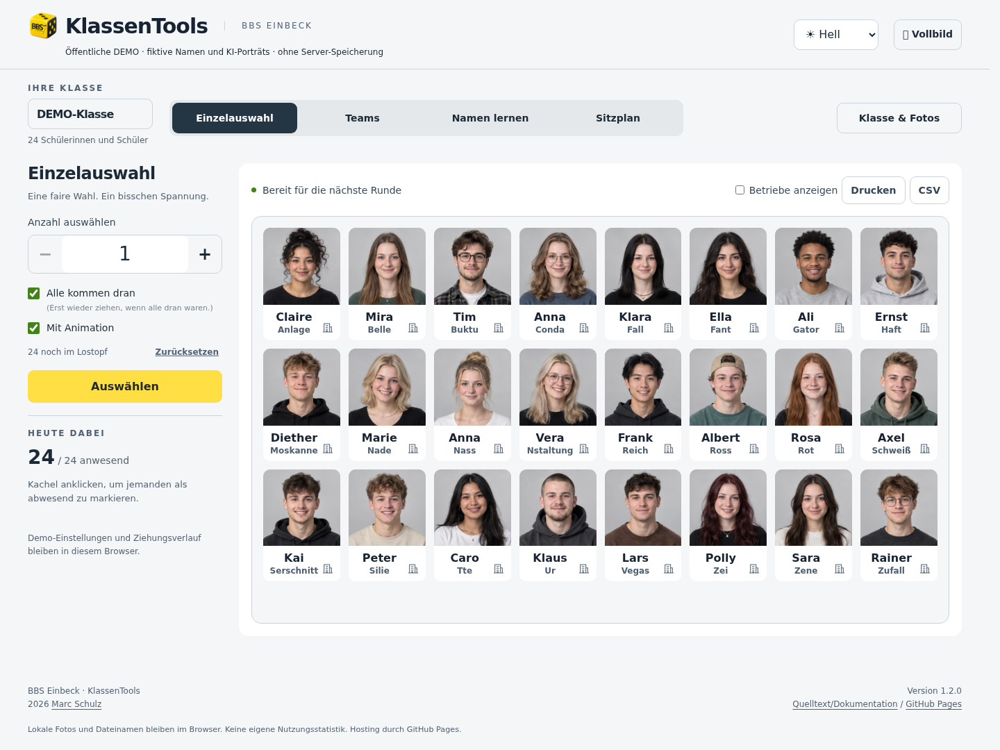
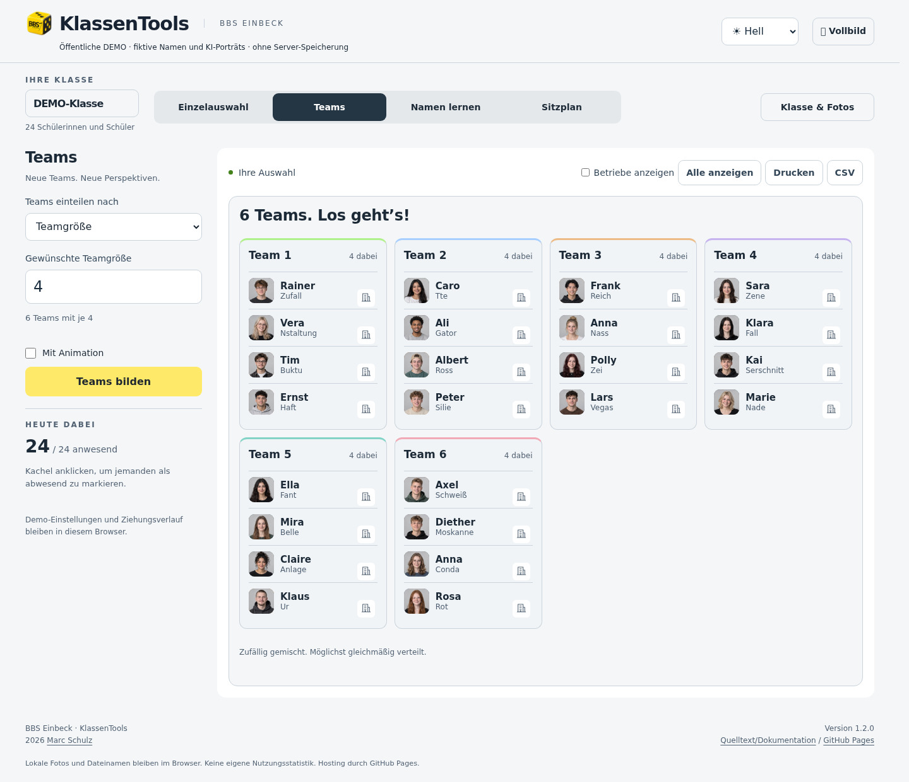
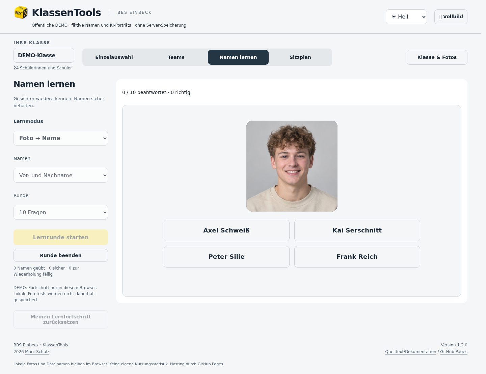
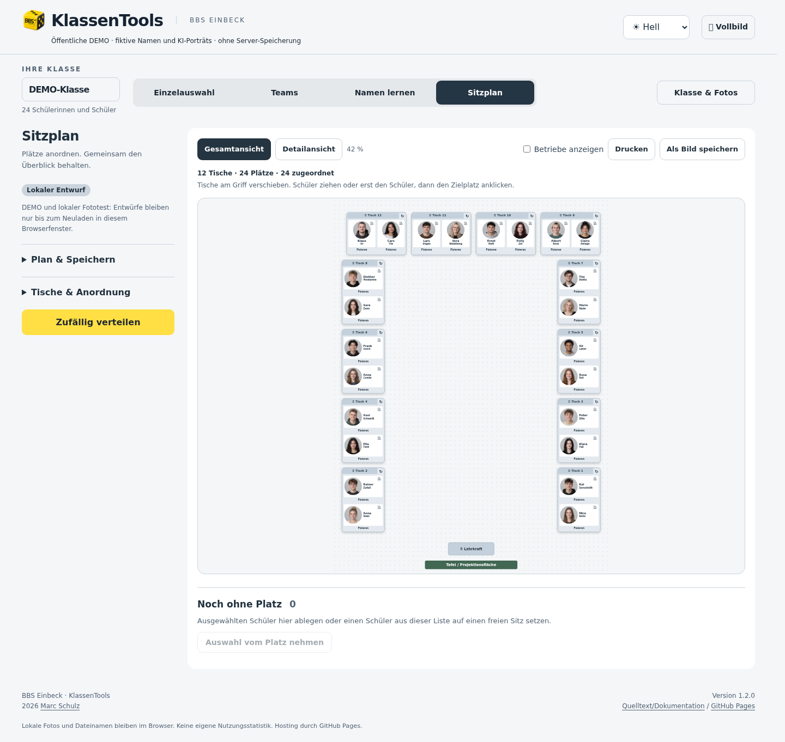
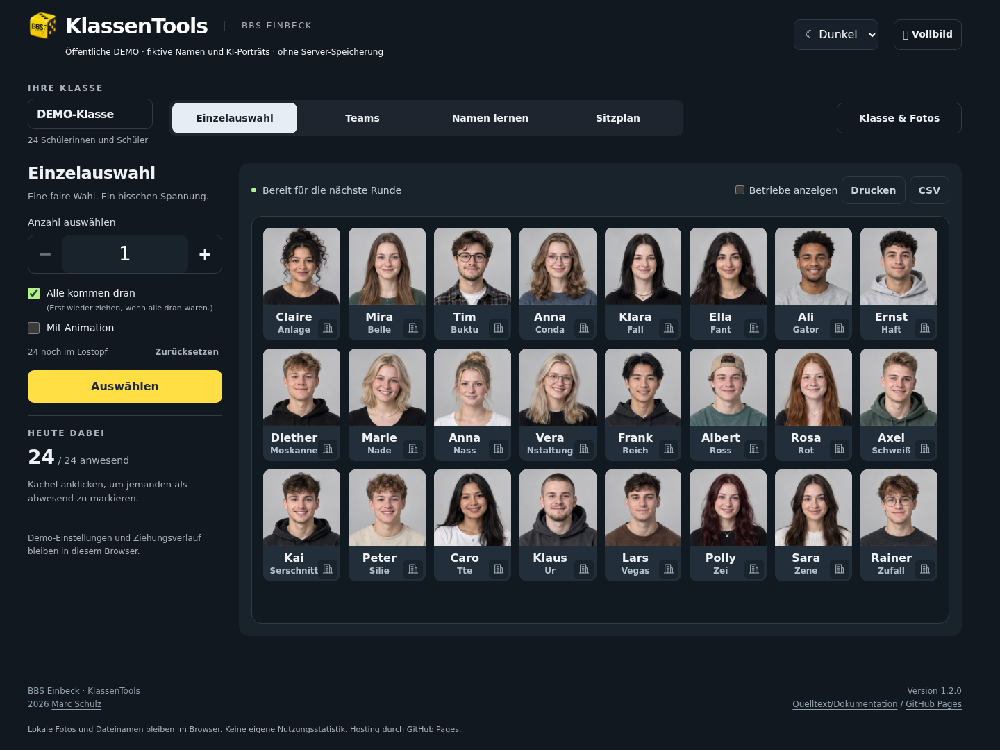

01 / AUSWÄHLEN
Alle kommen dran.
Einzelne Schüler auswählen, Abwesende ausnehmen und Wiederholungen vermeiden. Mit Animation, Wahrscheinlichkeit und Beameransicht.
FÜR IHREN UNTERRICHT
Wer ist dran? Wer arbeitet zusammen? Wie heißt diese Person? Wer sitzt wo? KlassenTools bringt Zufallsauswahl, Teams, Namenlernen und Sitzpläne an einen Ort.
Ohne Anmeldung. Mit erfundenen Namen und KI-generierten Porträts.
01 / AUSWÄHLEN
Einzelne Schüler auswählen, Abwesende ausnehmen und Wiederholungen vermeiden. Mit Animation, Wahrscheinlichkeit und Beameransicht.
02 / TEAMS
Teamgröße oder Anzahl festlegen. KlassenTools verteilt die Anwesenden gleichmäßig und macht das Ergebnis sichtbar.
03 / NAMEN LERNEN
Fotos und Namen zuordnen, Karteikarten üben oder gegen die Zeit spielen. Unsichere Namen werden häufiger wiederholt.
04 / SITZPLAN
U-Form oder Reihen, Einzel- oder Zweiertische. Tische drehen, Schüler umsetzen, Plätze fixieren, drucken und als Bild speichern.
EIN BLICK IN DIE APP
Alle gezeigten Personen sind fiktiv. Klicken Sie auf ein Bild für die große Ansicht.





FÜR DIE EIGENE SCHULE
Die Serverversion ergänzt eigene Klassen, gemeinsame Klassenfotos, private und gemeinsame Sitzpläne sowie persönliche Lernfortschritte, Ausbildungsbetriebe und administrative Highscores. Lehrkräfte erhalten nur Zugriff auf freigegebene Klassen, denen sie angehören.
Diese Demo läuft ohne Fachbackend. Eigene Testfotos bleiben im Browser; Sitzplanentwürfe werden hier nicht dauerhaft gespeichert. IServ-Anmeldung und echte Klassendaten gehören zur eigenen geschützten Installation.
Installation & Dokumentation →